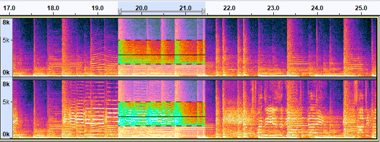
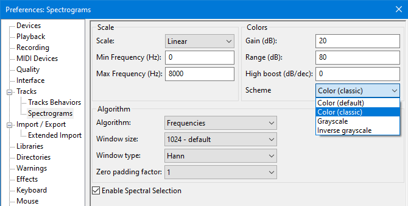
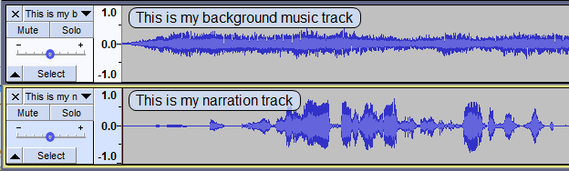
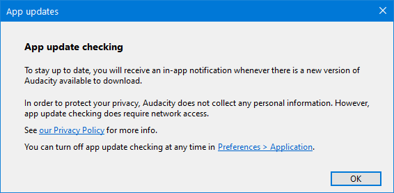
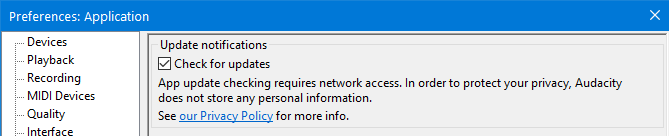
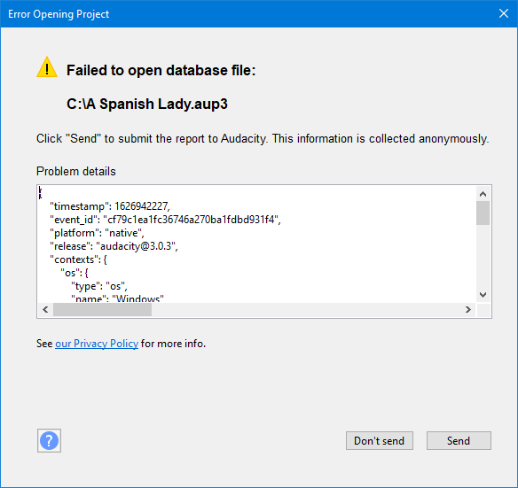

New features in this release
Version 3.0.3 is primarily a maintenance release to fix bugs and increase the stability of the Unitary Project database structure.
- Details of all the major changes since 3.0.2 can be found in Audacity Release Notes 3.0.3.
Contents
- The Windows version of Audacity is now 64-bit
- New colorways for Spectrograms
- Display of Track Name
- Update checking
- Automated crash and error reporting
- New official binary for Linux
- Privacy Notice
- Bug fixes
- Updating from Audacity 2.x to 3.x
The Windows version of Audacity is now 64-bit
For the first time, Audacity will now install as a 64-bit application on Windows devices. Due to this change, some processes and effects (e.g. certain sound generation processes & sliding stretch) will run much faster.
If you are a user of previous Audacity versions on Windows and had installed the optional FFmpeg library then you must now install the 64-bit versions of the FFmpeg library, otherwise your imports and exports that depend upon FFmpeg will no longer work. See Installing FFmpeg for Windows for installation details.
Installing the 64-bit FFmpeg library will not overwrite or delete your 32-bit FFmpeg library if you have one installed.
| As Audacity is now a 64-bit application, 32-bit plug-ins will not work on Audacity 3.0.3 or later. |
New colorways for Spectrograms
A new colorway has been introduced on Audacity 3.0.3 for Spectrograms.
The image below shows a sample track in Spectrogram view with a spectral selection:
- 
This is now the new default colorway for Spectrograms in Audacity.
Classic colorway
If you wish to revert to the former colorway just go to and choose the Spectrograms tab and from there in the Scheme dropdown menu select Color (classic).
- 
Additional grayscale
In addition to the Grayscale which was available as a choice for Spectrogram displays in earlier versions of Audacity there is now also an Inverse grayscale.
This too can be selected from the Scheme field in Spectrograms Preferences.
Display of Track Name
A new command has been added to the View menu, .
When this is enabled the audio track name is displayed superimposed translucently at top left of all audio tracks.
Note that the track name is always shown in the Track Control Panel but will be truncated if the name is too long to fit.
- 
This has the same effect as the setting for Show track name as overlay in Tracks Preferences.
Update checking
Audacity will now check for updates to see if a new update of Audacity is available. This is done on launch and then after every 12 hours while Audacity remains open.
The first time that you launch Audacity 3.0.3 you will see this dialog:
- 
The dialog has a direct link to Application Preferences enabling you to turn update checking "off" in order to opt-out of update checking.
This is not an automatic update, update does not happen without you choosing to do so from the update checking dialog that appears when a new update is available.
This has long been one of the most-requested feature requests submitted by users to Audacity and it has finally been implemented.
Opt-out
You can opt-out of update checking by using a new preference in Application Preferences where you can turn this "off" or "on" at any time, the default setting is "on".
- 
- But if you manually reset by deleting the audacity.cfg file in your Audacity settings folder this will get reset to "on" on next launch of Audacity.
- You will also get shown the update checking dialog again.
Automated crash and error reporting
Now if and when Audacity crashes, or produces an error, there will be a dialog to enable you to optionally send error and crash reports back to the developers and Quality Assurance.
- 
New official binary for Linux
We now provide an official binary for Linux in the form of an AppImage.
Privacy Notice
With the release of 3.0.3 Audacity has released the following Privacy Notice.
- The Privacy Notice explains how Audacity collects and uses any information that, alone or in combination with other information, relates to you when you use the desktop application Audacity. We collect very limited Personal Data about you.
- The Notice also sets out the rights that you have in relation to the Personal Data that we process about you and how you can exercise them.
Bug fixes
In addition to the fixed bugs shown here, several changes have been made to increase the stability of the Unitary Project database structure.
P1 Bugs
- P1 2754 - Change Tempo & Pitch and Sliding Stretch with selected audio in negative time crash Audacity on windows (error on Mac)
- P1 2772 - Audacity crashes after failing to open corrupt project
- P1 2793 - AUP3 projects fail to compact if project's path contains a single-quote
- P1 2803 - Audacity unresponsive after 'Fit to Height'
- P1 2805 - Audacity fails to export metadata with MP3 files
P2 Bugs
- P2 2339 - On second run of Audacity "Filter Curve EQ" gets changed to "Filter Curve..." in the Effect menu
- P2 2700 - "Failed to open the project database"
- P2 2732 - Faux recovery offered on launch (very moonphase)
- P2 2738 - Audacity crashes with Macros on files when the macro-output folder is in an unwriteable location
- P2 2739 - If Temporary files directory is set to be unwritable then Audacity has a catalog of cryptic unhelpful errors
- P2 2758 - Linux: No support for Jack Audio System
- P2 2741 - Msgctxt feature of translation not working
- P2 2743 - The first use of the "window" command in LOF files is ignored by Audacity
- P2 2747 - The Macros output directory is in the top section in audacity.cfg
- P2 2764 - Open Project... under ScriptablesII can corrupt a project
- P2 2800 - Audio and MIDI files cannot be opened from FAT/FAT32 drives
P3 Bugs
- P3 2671 - ENH: "Show track name as overlay" cannot be turned on from main menus
- P3 2778 - In German in the Erzeugen menu (Generator menu) "Silence..." is untranslated
- P3 2807 - Error message for a failed import of malforned MP3 lacks a "?" help button
P4 Bugs
- P4 1309 - Paste with sync-lock can give error message but still do something
- P4 1406 - Undoing envelope points by shortcut with mouse down creates spurious undo entries
- P4 2466 - Linux: Filter Curve EQ GUI far too wide
- P4 2759 - Failed Macro command leaves empty undo item in history
- P4 2809 - Label Sounds fails when track sample rate is 22050 Hz
P5 Bugs
- P5 1091 - Spectral Edit effects may have unpredictable results
Updating from Audacity 2.x to Audacity 3.x
With the release of Audacity 3.0.0 the project file structure of Audacity was changed significantly with the entire project contained in a single unified database file.
If you have already updated to 3.0.0 or 3.0.2 you should already be aware of this.
But if you are updating from any earlier 2.x Audacity version please read Updating from Audacity 2.x to Audacity 3.x.
Audacity 3.x can usually open AUP files created in older 2.x.x versions of Audacity , but saving the project in 3.x will prevent it opening again in Audacity versions prior to 3.0.0.
- Note that this will leave behind the old AUP file and its associated _data folder which you will probably want to delete to recover disk space.
- Audacity version 3.x should be able to open projects from Audacity 1.1 onwards - but not from 1.0
Links
> Audacity Release Notes 3.0.3 - detailed release notes for this release of Audacity